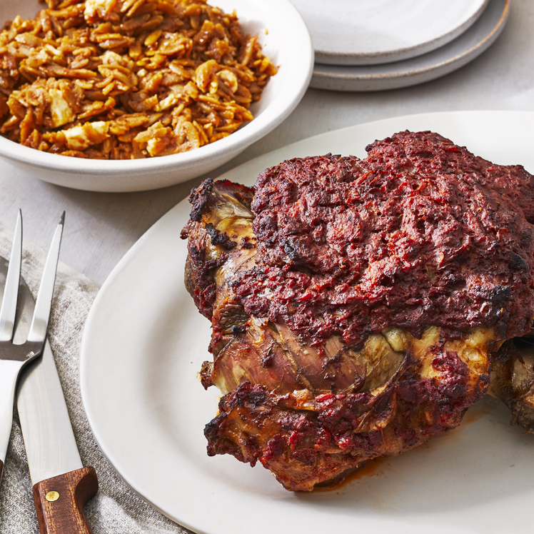

Greek Easter Roast Lamb and Orzo

Description
This is an Easter recipe that comes from this website. It looks delicious, and is very similar to the giouvetsi the buvette near us sells.
Ingredients
- 1 (2.5kg) bone-in leg of lamb
- 500ml mashed tomatoes
- 1 medium onion, finely chopped
- 3 tablespoons olive oil
- 1 tablespoon dried oregano
- salt and pepper
- 1 lemon, juiced
- 1.5l water
- 500g uncooked orzo pasta
- 200g feta cheese
Method
- Preheat the oven to 165 degrees C.
- Place lamb in a roasting pan. Add mashed tomatoes, onion, olive oil, oregano, salt, pepper, and lemon juice. Combine and make sure lamb is well coated. Cover pan with a lid or aluminum foil.
- Bake in the preheated oven for about 3 hours. Remove from the oven and remove aluminum foil; leave oven on.
- Add water and orzo directly to the roasting pan. Return to the hot oven and bake until pasta is cooked and very little liquid remains, 30 minutes to 1 hour. Add feta cheese and mix until melted and combined.